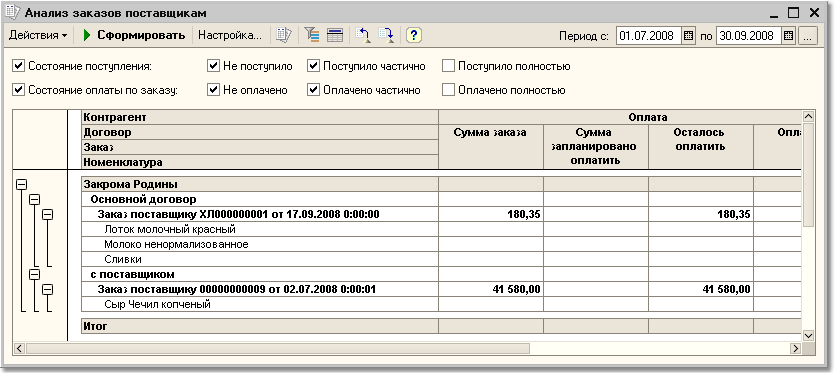

Отчет предназначен для анализа состояния открытых заказов поставщикам на определенный момент времени.
Параметры формирования отчета
Если необходимо сформировать простую форму отчета, в которой будут показаны только заказы, по которым на дату оформления отчета не поступил товар, следует выполнить следующую настройку отчета:
Данную настройку можно сохранить и использовать ее в дальнейшем для формирования простого отчета.

По кнопке "Настройка" вызывается форма настройки параметров отчета.
Показатели
Для анализа заказов в отчете выводятся две группы показателей: в части оплаты и поступления по заказу. Суммы оплаты и поступления по заказу выводятся с учетом тех корректировок, которые были введены по заказу.
В части оплаты товаров по заказу выводятся следующие показатели.
В части поступления по заказу выводится количество товара в базовых единицах измерения, в единицах хранения остатков или в единицах для отчетов:
Кроме этого, в отчет может быть выведена информация о сумме, на которую осталось получить товаров по заказу, в валюте управленческого учета и в валюте взаиморасчетов.
Группировки строк и колонок
Данные в отчете могут быть сгруппированы по контрагентам, договорам с поставщиками, по заказам и по товарным позициям.
Отборы
Данные отчета могут быть отфильтрованы по условиям, заданным в блоке "Отборы
".Чтобы добавить вид отбора, щелкните кнопку "Добавить" и выберите поле, по которому будет производиться отбор. Затем задайте Тип сравнения, который определит область поиска заданного значения. Значение отбора выбирается из соответствующего справочника. Значением отбора может быть как отдельный элемент, так и группа и список выбранных элементов.
Вид отбора активен, только если в строке вида отбора установлен флаг.
При необходимости отследить отгрузку и оплату заказов конкретного менеджера, можно произвести по нему отбор данных. В качестве менеджера в этом случае используется тот пользователь, который указан в качестве ответственного в заказе поставщика. Чтобы произвести отбор по менеджеру, необходимо установить в качестве реквизита отбора "Заказ. Ответственный".
В отчете также можно установить отбор и группировку по состоянию взаиморасчетов и поступления по заказу - получен ли товар, полностью ли выплачена сумма заказа и т.д.